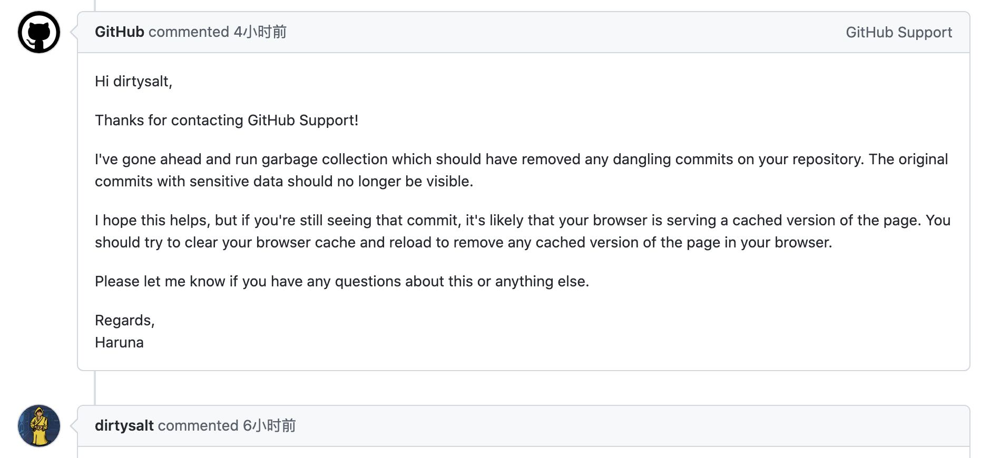

Github上删除敏感信息
今天不小心在主仓库上上传了敏感信息，花了点时间搞清楚怎么删除掉。我这个case比较特殊：只是上传到我自己的分支上，这个分支没有被其他人clone, 所以只需要删除我本地的这份数据，以及github上的就好。
复现过程比较简单
- 比如我们fork一个公开的仓库 https://github.com/danluu/post-mortems
- 创建一个分支，增加一些敏感信息，然后上传到github上
- （此时发现敏感信息已经透露，想删除github上数据）
- 正确的办法 可能 是在本地修改commit, 然后git push -f来覆盖branch HEAD (UPDATE: 也不行，也会存在orphaned commit)
- 但是我没有这么做，我只是直接删除分支，然后就得到下面这样的结果了。
下面这个就是orphaned commit: https://github.com/dirtysalt/TestLeak/commit/32060646f4b7b9c5539cf52e75ee1335f4683a8f 如果这个commit只存在于这个仓库的话，那么也还行，只要不使用这个仓库就好了。但是如果使用相同的commit去访问upstream的话，发现其实也存在 https://github.com/danluu/post-mortems/commit/32060646f4b7b9c5539cf52e75ee1335f4683a8f. 这个有点不太好。
找了一圈尝试了各种办法，发现也只有这个还比较靠谱吧 https://docs.github.com/en/authentication/keeping-your-account-and-data-secure/removing-sensitive-data-from-a-repository. 我甚至想过是否可以fake一个commit id然后推送到github上，但是应该很难(等于碰撞一个SHA1出来)，之前还的确有人这么做过 https://news.ycombinator.com/item?id=17681890
正确的办法就是通过github supports来请求请求删除orphaned commit. https://support.github.com/request (“从我拥有或控制的存储库中删除数据” -> "清除缓存视图" -> 智能助手提交commit URL). 处理时间大约是在2个小时做左右。

处理完整之后我发现upstream的commit也被删除了。不过即使commit删除了，commit下面某些文件还会有缓存，可以针对这些文件继续提交删除缓存的请求。
不小心上传敏感信息这事情的确是有点麻烦，从根源上通过技术手段保证合规还是更重要。